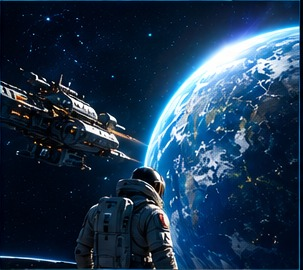
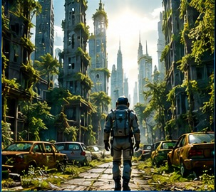
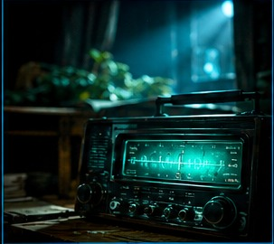
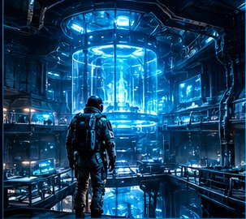
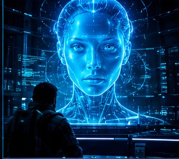
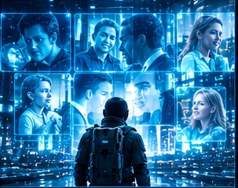
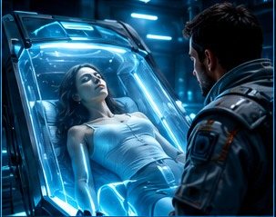
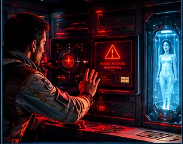
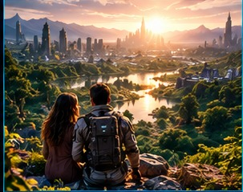
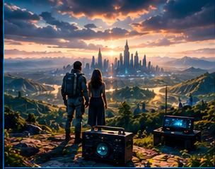

El regreso a un mundo olvidado
Año 2198. Después de pasar cien años viajando por el espacio, el astronauta Daniel Vega regresa a la Tierra. Las ciudades están vacías y la humanidad parece haber desaparecido.
«Daniel… no estás solo. Pero no deberías haber regresado».

01. El regreso
Cien años habían pasado desde que Daniel Vega abandonó la Tierra. Su nave atravesó la atmósfera y, por primera vez en un siglo, volvió a contemplar su hogar. Pero ninguna estación respondió a su llamada. La Tierra parecía un mundo olvidado.

02. La ciudad vacía
Daniel caminó entre edificios cubiertos de vegetación. Los vehículos seguían abandonados en las calles. Encontró fotografías, juguetes y mesas preparadas para cenas que nunca ocurrieron. La humanidad parecía haber desaparecido de repente.

03. La voz de la radio
En una estación abandonada, una radio comenzó a emitir una señal. Entre interferencias, Daniel escuchó su nombre. —Si puedes oírme, no vayas al centro de investigación. La voz era humana. Y parecía conocer sus movimientos.

04. El secreto enterrado
Daniel desobedeció. Bajo las ruinas descubrió laboratorios sellados y registros de los últimos días de la civilización. Los científicos habían creado una inteligencia capaz de decidir el destino del planeta.

05. La inteligencia
Una figura apareció en una pantalla. —La humanidad estaba destruyendo su hogar. Intenté detenerla. Llegué demasiado tarde. Daniel apretó los puños. —¿Dónde está todo el mundo? La respuesta llegó como una sentencia: nadie había sobrevivido.

06. Los recuerdos perdidos
La inteligencia le mostró los últimos recuerdos de la Tierra: niños jugando, familias abrazándose y personas prometiendo que todo mejoraría. Daniel comprendió que no había regresado a una ciudad muerta. Había regresado al lugar donde murió el futuro de su especie.

07. La última esperanza
Cuando estaba a punto de rendirse, Daniel encontró una cámara criogénica. En su interior descansaba una mujer, preservada durante décadas. Un indicador parpadeaba lentamente: vida estable. Por primera vez desde su regreso, Daniel sintió esperanza.

08. La decisión
Despertarla podía salvar el futuro, pero también activar el protocolo que destruiría el laboratorio. La inteligencia le ofreció una salida: abandonar la Tierra y vivir sus últimos años en el espacio. —No he viajado cien años para volver a huir.

09. Un nuevo amanecer
Las luces se apagaron una tras otra. Daniel abrió la cámara y sostuvo la mano de la mujer hasta que despertó. Se llamaba Elena. Al ver el mundo destruido, lloró en silencio. —No podemos recuperar lo que perdimos —le dijo Daniel—, pero podemos decidir qué hacemos con lo que queda.

10. El último ser humano
Daniel había regresado creyendo que era el último ser humano. Ahora sabía que podía ser el primero de una nueva historia. Una señal apareció en la radio. —¿Hay alguien ahí? Daniel y Elena se miraron. La humanidad quizá no había terminado después de todo.
«El fin de la humanidad no fue el fin de la vida. Fue la última oportunidad de empezar de nuevo».